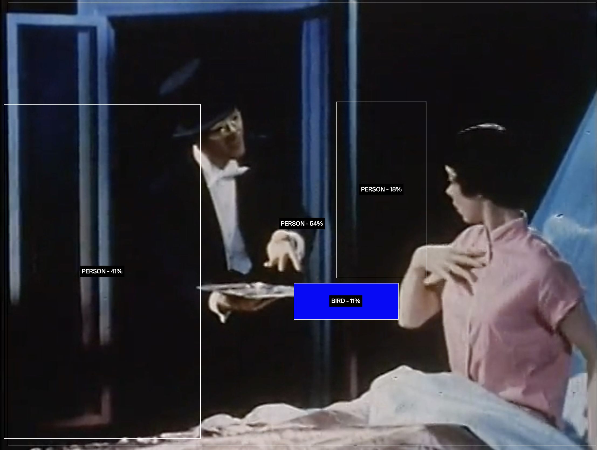
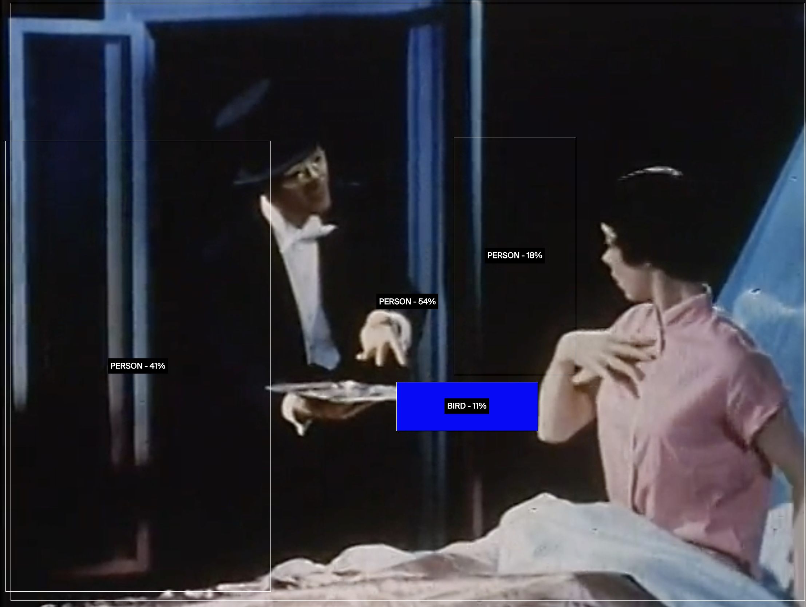

Set at the 1956 General Motors Motorama, Design for Dreaming is one of the key Populuxe films of the 1950s, showing futuristic dream cars and Frigidaire's "Kitchen of the Future." Produced to bring the 1956 G.M. Motorama to audiences unable to see it in major cities, this film introduces the new 1956 cars, Frigidaire's "Kitchen of Tomorrow," and the electronic highways of the future. A Fifties-style sleeping beauty is awakened into a dream by a magician dressed in tails who hands her an invitation to the Motorama at New York's Waldorf-Astoria Hotel. She flies through the nighttime sky to the hotel, where she sees the milling crowds and marvels at the new cars, and objects to buy.
With the magician she expresses her desires ("I want a Corvette..."; "This Buick's a beaut...Oh, what a dreamy ride! I think that I'd like to buy it!") until suddenly an apron appears around her waist and he carries her into the "Kitchen of Tomorrow." She briefly protests the stereotypical roles of being a woman but is distracted by the wonders of the machine that reads recipes off computer cards, the glass-walled refrigerator, and the hemispherical glass oven that seems to be able to make a cake with lighted birthday candles on top. Dancing through the kitchen, she contemplates the life of leisure made possible by its labor-saving devices ("Tick, tock, tick, tock, I'm free to have fun around the clock!") until her cake is ready. As she blows out the candles, she is transported back to the Motorama, where the "dream cars" are presented by models sporting various designer outfits of the time. Her magician guides her into the Firebird II, which seems to have inspired John DeLorean's innovations twenty years later, calls the traffic dispatch center by radio, and they are off onto the electronic highway of tomorrow. As they ride through a futuristic urban landscape incorporating building models and real slot cars, the couple sings a duet linking their love to technological progress.
Capitalism brings us a promise of a new tomorrow through rapid innovations and efficiency. It is responsible for hyper efficiency, and a majority of the innovations of the 20th century, but it is also responsible for alienation. Why is it that in the most advanced society we feel so lonely? Instead of becoming apart of a community and feeling like an integral part to nature, we feel trapped inside of the box full of objects we have purchased. Most of these objects, in fact, influence us to purchase more objects, creating a feedback loop of want, and consumption, with brief periods of peace.
The extension of technology has lended to us a meaning of category beyond the scope of ethics, into a new territory of stimulation, and personalized advertisements. Since the 20th century, a new age of bureaucratic rule is no longer in the hands of DMV clerks, or signage filers, but instead in the categorization of humans, and objects for capital gain, gain of power, gain of culture or gain of control.
This is a society in which the economic system stops looking at people within a means of themselves, but instead a means to some sort of worker in a machine of hyper efficient technology, and the efficiency is non neutral. Instead it is filled with cultural biases, oppression, and stereotypes based on those in power. We are sold products which categorizes these stereotypes and categorize humans in terms of needs for these stereotypes.
This project uses Walter Benjamin’s idea of the image dialectic to create meanings in two forms of advertising, marketing and advanced capitalism. By using object-detection machine learning algorithms, to live detect the video Design for Dreaming, the project aims to create new meaning to media which promises more efficiency, and hope while ignoring larger societal and cultural issues.
Machine learning algorithms claim to be objective, adding quantification onto a world of images, and media. But this objectivity is reliant on pretrained models, with many flaws attached. This project takes a critical look at hyper consumer culture. Using limited language output detection models, the work focuses on finding the fundamental flaws in our vision of utopia through consumerism, and through the media.